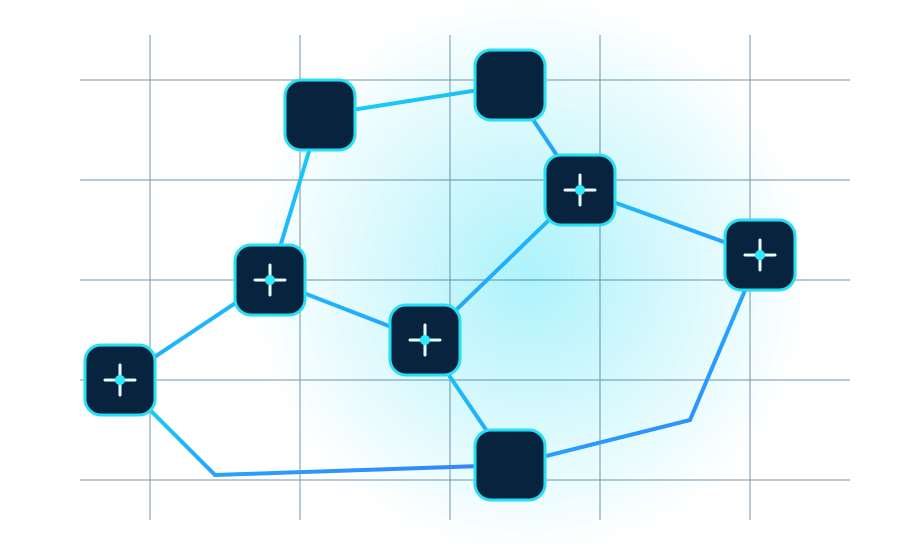

⌁
Fiber Optik
Instalasi, penarikan, penyambungan, dan pemeliharaan jaringan fiber optik.
WIRATEL menghadirkan solusi infrastruktur telekomunikasi, fiber optik, dan jaringan yang dirancang untuk mendukung kebutuhan bisnis dan masyarakat.

Kami mendukung pembangunan dan pengembangan infrastruktur konektivitas melalui layanan yang terintegrasi dan berorientasi pada kualitas.
Instalasi, penarikan, penyambungan, dan pemeliharaan jaringan fiber optik.
Perencanaan dan pembangunan jaringan Fiber to the Home untuk konektivitas yang andal.
Instalasi sistem CCTV, jaringan data, dan infrastruktur pendukung keamanan.
PT WIRA TELCO NETWORK INDONESIA berfokus pada solusi telekomunikasi dan infrastruktur jaringan. Kami percaya konektivitas yang kuat dibangun melalui perencanaan matang, pengerjaan berkualitas, dan komitmen jangka panjang.
Diskusikan kebutuhan jaringan dan proyek Anda bersama WIRATEL.